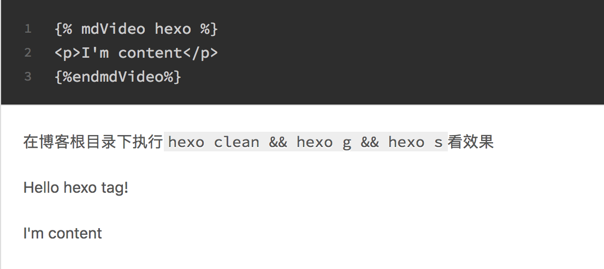
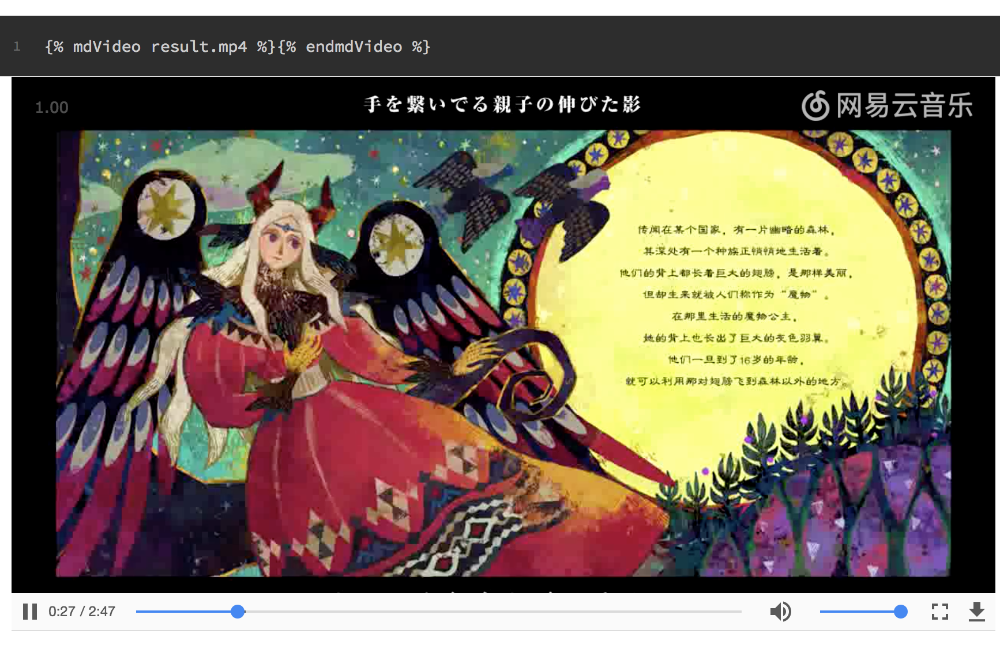

玩转hexo的第一步：自己写一个插件
（更：由于将博客迁移至Github Page，网速较慢，所以现在一个移去了博客中所有的视频博文）
环境
- node v8.5.0
- hexo v3.7.1
- hexo-cli v1.1.0
前言
Hexo对Markdown解析的不错，唯一不太完美的就是无法添加视频标签，不过其实也是可以的，如下
1 | 这是一篇博文 |
但是如果我又想用第三方库把播放器装扮的好看一点呢，总归不可能写一次视频就写一大堆script,link,div标签吧，这样代码的重用性非常的不好，比较希望是如下效果
1 | 这是一篇博文 |
那就自己写一个插件呗。
ps：
1.这里的video.mp4是默认存在执行hexo new post时创建的文件夹中的，只要把配置文件_config.yml中的post_asset_folder设为true就可以了。这样子静态资源对应的路径就是http:// ... /文章名/video.mp4了
- 需要对javascript的语法有一定的了解
准备工作
在博客的根目录的node_modules中创建一个文件夹，就把它叫做hexo-simple-video-tag好了，注意，文件夹一定要是以hexo-开头的，请参考官网文档:
1 | First, create a folder in the node_modules folder. |
到这个文件夹的根目录(/node_modules/hexo-simple-video-tag)下执行npm init命令，使其生成一个package.json文件，同时创建一个index.js文件目录如下
1 | . |
package.json(/node_modules/hexo-simple-video-tag/package.json)的文件内容如下
1 | { |
将name与version的信息添加到博客根目录的package.json文件中
1 | .... |
使用npm script简化命令的输入，还是在博客根目录的package.json文件中
1 | .... |
这样直接在命令行中执行npm run local就可以启动本地预览服务器了
好了，打开文件夹hexo-simple-video-tag中的index.js文件开始编写代码
关于 hexo.extend.tag.register 的说明请查看官方文档
1 | hexo.extend.tag.register('mdVideo', function(args, content){ |
创建一篇新博文，就是本文的标题吧教程向：自己写一个hexo插件,写入如下内容
1 | {% mdVideo hexo %} |
在博客根目录下执行hexo clean && hexo g && hexo s看效果

编写函数逻辑
规定，传入的第一个参数，也就是args[0]为视频文件的名称，且视频不在首页显示
1 | hexo.extend.tag.register('mdVideo', function(args, content){ |
在对应的资源文件夹中添加视频
1 | . |
并在文章中输入如下内容看效果，重新执行 npm run local
1 | {% mdVideo result.mp4 %}{% endmdVideo %} |

莓问题！
一些改进
当你要添加第三方播放器库的时候，就可以非常方便地修改插件而对所有的视频标签进行修改了，不过有一些主题的css会影响到H5视频的全屏播放功能，而且压缩的js过大导致hexo在generate时出错，这些问题我都在之前的一篇文章里有说，就在前几篇的位置,名字叫经验向：使用HEXO的两个小坑以及一个效率优化